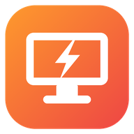

KadduDesk
Fast remote desktop for your PC
My PCs
Nearby on this network
Add a PC by address
Tips
• Run KadduDeskServer.exe on the PC you want to control — it shows the PIN.
• Hub (🌐): make your main PC the hub in its control panel and join your other PCs to it. Then open the hub to control any of them from anywhere (port 47820).
• Away from home? Forward TCP 47820 (hub) or 47800 (single PC) on your router, or use Tailscale.
• Wake sends a Wake-on-LAN packet (enable WoL in the PC's BIOS/network adapter).